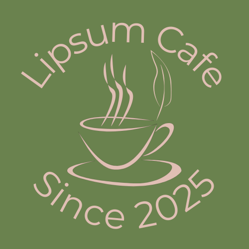

ポートフォリオについて
これは私の制作実績の紹介ページです。
架空のカフェ「LIPSUM CAFE」のホームページについて、以下の内容をもとに作成に取り組みました。
概要
| 項目 | 内容 |
|---|---|
| スキルセット | HTML / CSS / jQuery / Bootstrap / Illustrator / Photoshop / Figma / Canva |
| 架空のクライアント | 有機栽培のコーヒーとオーガニックフード専門カフェ。ブランドイメージを伝えるホームページ制作を依頼。 |
| 制作期間 | 2週間 |
| 担当範囲 | デザイン、コーディング、レスポンシブ対応 |
| 工夫した点 | モバイルファースト設計、ページ速度の最適化、SEO考慮 |
| ソースコード | GitHub リポジトリ |

サイトロゴ
ヘッダーとファビコンに使用。
コーヒー豆と葉のモチーフを組み合わせ、オーガニック感を表現したロゴを作成。
- 適切なHTML構造・セマンティックタグ
- <h1> はページに1つ（例：「ポートフォリオについて」）
- <h2>, <h3> で見出し階層を整理
- <main>, <nav>, <header>, <footer> などのセクションタグを使用
- alt属性の適切な使用
- 画像に alt 属性を必ず設定
- 例：<img src="logo.webp" alt="LIPSUM CAFEのロゴ">
- メタ情報の設定（HTMLの <head> 部分）
- <title> タグ：ページタイトル
- <meta name="description">：ページ説明文（検索結果で表示されやすい）
- 例：
<title>LIPSUM CAFE | 制作実績</title>
<meta name="description" content="架空のカフェ『LIPSUM CAFE』のホームページ制作実績です。レスポンシブ対応、SEOを考慮したデザインと実装を行いました。">
- ページ速度の最適化
- 画像を WebP などで軽量化
- モバイルファースト・レスポンシブ対応
- モバイルでも見やすい設計は、Googleのモバイルファーストインデックスに有利
- 内部リンクの設計
- ナビゲーションがわかりやすく、ページ内リンク（例：トップに戻るリンク）が整理されている
- アクセシビリティの配慮
- キーボード操作、スクリーンリーダー対応（例えばボタンに aria-label つけるなど）